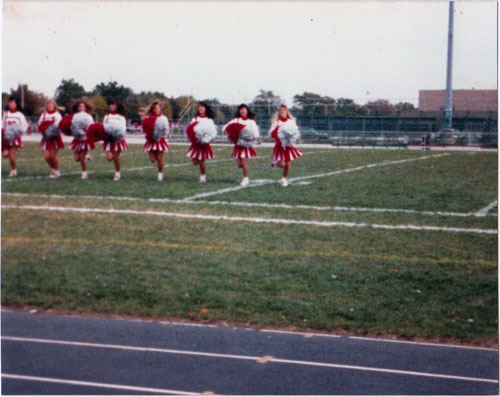

A letter to my high school class on the eve of our reunion:
Classmates,
This summer marks the 20th year since we graduated from Niles West High School. Twenty years — a greater span of time than our age in 1991. Since then we’ve gone to college, found jobs, married, had kids, even more kids, and possibly divorced and married again. We’re old enough to have children approaching high school age, if not college. And our lives have taken innumerable directions. Many of us have stayed in Chicago — some have remained in Skokie or Morton Grove or Niles or Lincolnwood. Others may have settled abroad. I’m writing you from New York City, where I know there are a few fellow graduates. Given a class of roughly 400, we must also live in California or Texas or Florida, with outliers in places like Ketchikan, Alaska, or god knows where.
Our professions are varied. Only Mike Weiss and Kim Loewenthal were Most Likely to Succeed — it says so right here in my senior issue of West Word — but even the slackers and burnouts have matured, probably running successful businesses, while the honors and AP students have veered off the professional track, now growing organic vegetables up in Wisconsin.
Back in 1991, we were The Indians. A decade later, we became The Wolves. Really, we were just suburban kids from Chicago, trying to have a good time, learning to date and drive and navigate the social hierarchy, so it really didn’t matter what mascot we were, it just helped differentiate us from the kids at Niles North. And not all of us even cared. We had cars! And we spent entire weekend nights getting shooed away by the cops from the various local parking lots. It was the year of the first Gulf War, which we watched live on CNN. Some of us debated this war in the hallways and in the student newspaper and even at a teach-in, but for the most part we didn’t pay too much attention.
So here we are at our 20 year reunion, equipped with old yearbooks and prom photos recovered from our parents’ basements. We see people we briefly, awkwardly dated and recognize others we never really knew. And we reconnect with junior high friends who drifted away in high school. There are others we openly disliked, or who disliked us for good reason, because we were young and mean. But little of this history matters. There’s an open bar. Grievances have passed. Hierarchies have crumbled. The jocks talk to the kids in marching band. The next day, we’re all tagged in a single photo.
After graduation, we never returned. We hear the building has since doubled in size, our teachers are no longer there, and the football field is covered in astroturf. We don’t even have the same mascot. But tonight, again, we are The Indians. For better or worse, we will never be The Wolves.
Elliott Malkin
Class of ‘91
Niles West High School is in Skokie, Illinois, once home to the highest concentration of Holocaust survivors in America.
Photos by my brother Benjie Malkin, who was a senior when I was a freshman.

I took Aya to the Homecoming Game against Evanston. Ahem, anyways…It was good to see some people again. We went out for pizza afterwards. High school was great, but it’s even better to know that there’s a life after high school, too. Not many young’uns realize that.
I was a Niles west Indian and was very proud to be.’82 grad. I thought it was a celebration of the great Indians, I must have read it wrong.